The LUT was perfect. The picture was grey.
We wanted a Lumix S9 to shoot, straight out of the camera, the colour we get from Capture One and a Cobalt profile. Turning that profile into a LUT took seven rounds and four test photos. What worked came from measuring Capture One rather than decoding it.
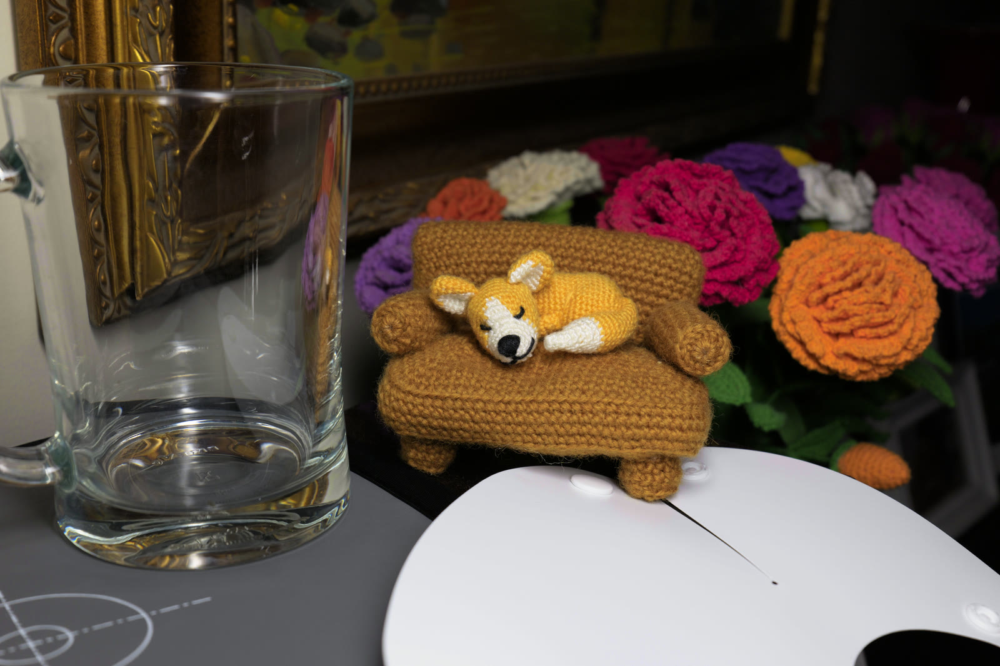
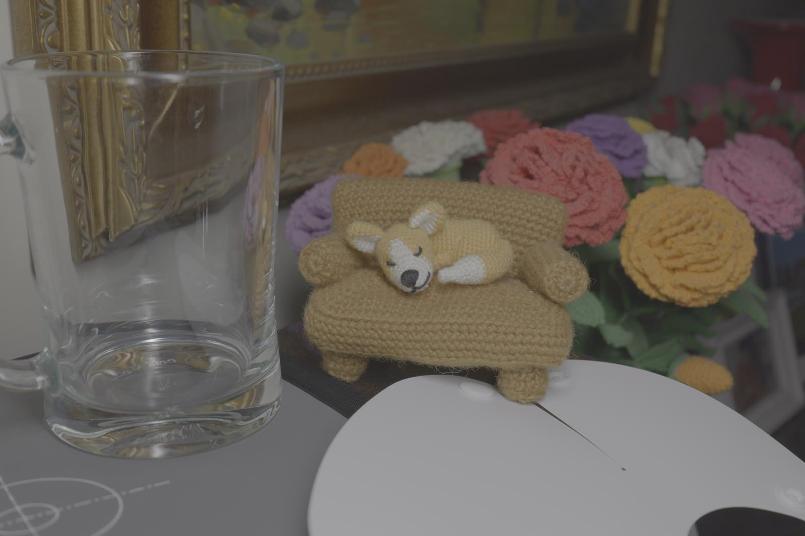
- Distance from Capture One's render
- 17.1 to 1.6average ΔE00 across this photo's colours, first LUT to last
- LUT grid
- 33 × 33 × 33the finest a Lumix accepts
- Measured from
- Four photostwo indoors and two in daylight, each rendered by the camera and by Capture One
A camera profile is not a look
Cobalt Image makes camera profiles for Capture One. They are ICC files, and ours are Cobalt Neutral and Cobalt Standard for the Lumix S5II. Capture One renders our S9's raw files through them, and we like the result.
A Lumix can do something similar on its own. Under a Photo Style called REAL TIME LUT it applies a LUT to every photo and video as it records, and it takes .cube files with up to 33 points per channel. So the plan looked simple: sample the profile on a 33 × 33 × 33 grid and write the samples out.
That first LUT reproduced the profile to within 0.06 ΔE00 on average. ΔE00 is the standard score for how different two colours look, and 1 is about the smallest difference a trained eye picks out side by side. On the camera the LUT was useless. It turned black into a grey of 0.17 on a scale of 0 to 1, and squeezed everything from black to white paper into 0.17 to 0.65. Against Capture One's render of the same frame it was 17.1 ΔE00 away.
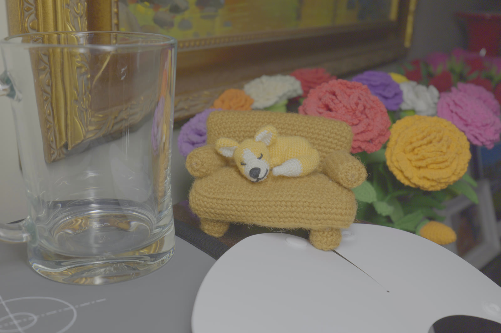
Round 117.1 ΔE00 from Capture OneThe profile answers a different question. It holds a single table, from the camera's raw sensor values to colour, and nothing that goes back the other way. Its input is what Capture One has made of the raw file by the time the profile runs: demosaiced, white balanced and encoded with a gamma of 1.8. Greys show it. Feed the profile a raw value of 0.5 and out comes L* 60.50, where a plain 1.8 gamma predicts 60.53. The profile carries almost no contrast of its own.
No camera setting produces that input. A Lumix hands its LUTs V-Log, so a LUT built straight from the profile expects numbers the camera never sends.
- Type
- Input profile, for a camera
- Direction
- Raw camera RGB to Lab, one way
- Table
- 33 × 33 × 33 points
- Table back
- None
- Greys
- Gamma 1.8, almost no contrast
Rebuilding raw data from V-Log
If the camera speaks V-Log and the profile speaks raw, the LUT has to translate. V-Log is published down to its constants, so undoing it is exact, and it gives back the scene's brightness in Panasonic's V-Gamut colours. What isn't published is how the sensor itself sees colour, and that is what the profile needs.
Adobe measures that for each camera it supports, as a matrix from standard colour to the sensor's own red, green and blue, and the open-source LibRaw library carries the numbers. With it, the LUT runs V-Log backwards to raw camera values, then through Cobalt's profile, then out to sRGB.
- V-Logwhat the camera hands the LUT
- Scene lightundo the log curve, in V-Gamut
- Raw camera RGBsensor matrix, white balanced
- White balancea small cut to blue, from round 7
- Colour correctionfitted to four photos, rounds 6 and 7
- Tone curveCapture One's, from round 4
- Gamma 1.8how Capture One feeds a profile
- Cobalt profileraw camera RGB to colour
- sRGBwhat the photo is saved in
We checked the chain before trusting it. Pushed through the matrix and Cobalt Neutral, a synthetic ColorChecker's colour patches land 1.8 ΔE00 from the chart's true colours on average, and five of its six grey patches within 0.2 L*. The colour was right. The picture was still grey.
Accurate is not pleasing
Cobalt's profile carries no contrast, so the punch in a Capture One render comes from Capture One's own film curve, applied outside the profile. Our second LUT had a neutral curve in its place, and brightness that is true to the scene looks flat on a screen. Pleasing pictures add contrast on purpose. Our neutral curve put a surface five stops under middle grey at 0.076, where Panasonic's own V-Log conversion puts it at 0.020.
So we borrowed contrast, two ways. One LUT copies the greys of Panasonic's V-Log to V-709 conversion exactly, from the file Panasonic publishes. The other uses a generic film curve: middle grey left where it was, blacks deeper, whites brighter. We expected the film curve to land closer to Capture One. It was the other way round, 5.6 ΔE00 for Panasonic's curve and 8.5 for ours.
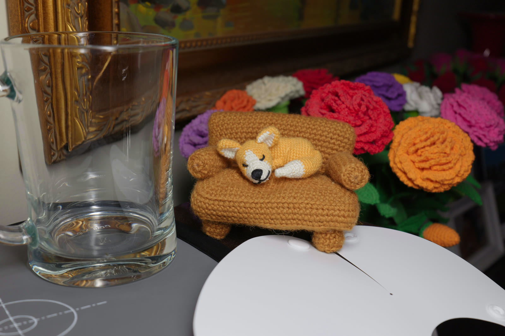
Round 3Panasonic's contrast, 5.6 ΔE00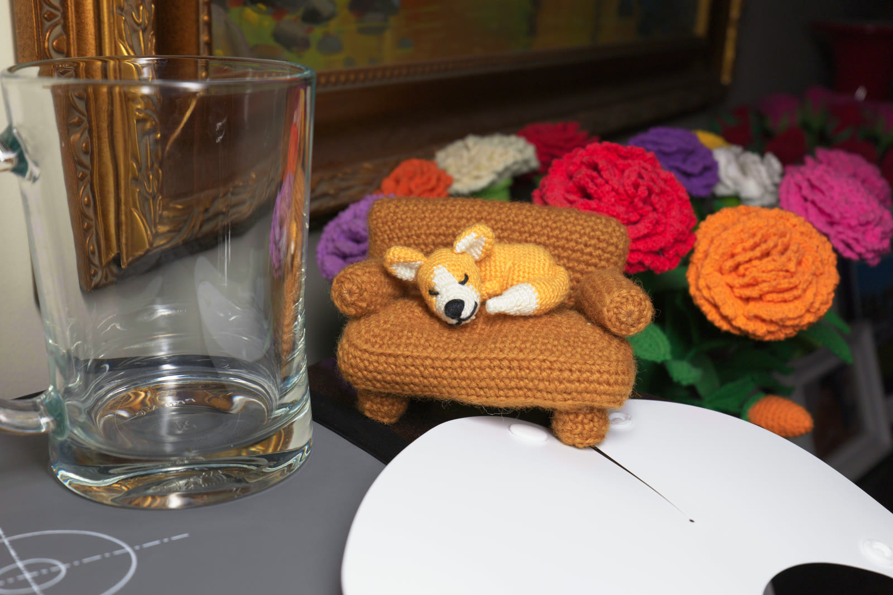
Round 3A film curve, 8.5 ΔE00Both were guesses about a curve we had never seen.
The file that wouldn't say
Capture One keeps its tone curves in .fcrv files, one per camera. The S5II's Auto curve is 353 bytes. The format is binary, but people on the Luminous Landscape forum worked out how its points are stored, and the whole file decodes: a name, Film standard, a one-line description, three curves of 10, 10 and 8 points, and a few numbers that aren't documented anywhere we could find.
- Curve points 236 bytes
- Name and description 87
- Undocumented numbers 24
- Header 6
What the file doesn't say is which curve Capture One uses, or what its axes are: raw values, gamma-encoded values or something else. Every x position lands exactly on a grid of 1/228 steps, so these are points someone placed in a curve editor, and a point means nothing without its axes. Read four plausible ways, the file puts middle grey anywhere from 0.43 to 0.74.
| Reading of the file | 3 stops under | Middle grey | 2 stops over |
|---|---|---|---|
| Curve 1, on raw values | 0.030 | 0.456 | 0.947 |
| Curve 2, on raw values | 0.058 | 0.429 | 0.934 |
| Curve 3, on gamma-encoded values | 0.151 | 0.489 | 0.891 |
| Curve 1, on gamma-encoded values | 0.323 | 0.739 | 0.974 |
| No curve at all | 0.170 | 0.461 | 0.868 |
None of the four matched Capture One when we later checked against a real render.
Measure the whole chain
So we stopped decoding and measured. One shutter press on the S9, in V-Log with RAW+JPEG, records the same instant twice. The V-Log JPEG is exactly what a LUT receives, and the raw file is what Capture One renders. Export that raw from Capture One with the Cobalt profile, and every pixel pairs a LUT input with the output we want from it.
Two things got in the way. The raw file opens about 2.7 stops too dark in any raw converter, because V-Log's base ISO is 640 rather than 100: the camera lets in less light and counts on V-Log to lift it. We exported at +2.7 EV to put it back. The two versions also don't line up. The camera and Capture One correct lens distortion slightly differently, and the camera's frame comes out 1.7% larger. Matching 628 patches of detail found the offset. The two lens corrections differ a little too, not just in scale, and allowing for that the pair lines up to within about three pixels.
Show the numbers
Then the measurement itself, on our first test photo: a desk at ISO 4000 under indoor light. Over 135,000 flat, neutral blocks of 8 × 8 pixels, the pair traces what Capture One's Film Standard curve does to every grey in the scene, from V-Log black to three and a half stops above middle grey. Where it clips couldn't be measured here, because only a handful of blocks reach white; a daylight photo later put it at about four and a half stops. Most of the pictures in this article come from a second photo, shot later, which gets its own section below.
Show the numbers
Capture One's curve is darker than both guesses below middle grey. It puts middle grey itself at 0.37, and a surface five stops down at 0.008, less than half of what Panasonic's curve gives.
The curve alone still wasn't the look. Applied to each colour channel separately, the way a Curves tool works, it made colours 20% more saturated than Capture One's, because a contrasty curve stretches the gaps between channels along with everything else. Capture One keeps saturation nearly constant. A blend matched it: a quarter of the curve applied per channel, and the rest applied to brightness alone so each colour keeps its channel ratios. That lands within about 1% of Capture One's saturation.
Show the numbers
The whites weren't white
Round 4's whites looked slightly dull and slightly blue. Measured against Capture One on the first photo, they were 1.3 L* darker and 1.5 b* bluer, with 1.6 times Capture One's tint.
Capture One's own near-greys held the answer. In its render the brightest greys lose most of their blue, which is what applying a curve to each channel separately does near white: the curve's shoulder squeezes the gaps between channels. Round 4 kept each colour's channel ratios for three quarters of the curve, so its whites kept their tint. Round 5 hands the curve over to the channels as tones climb, from a quarter of it at middle grey to all of it two stops up.
Show the numbers
Two smaller fixes rode along. Our measured curve was coarse near white, so we refitted the top with finer steps. And applied pixel by pixel, the LUT came out up to 0.016 darker than the curve we had fitted to block averages. We never pinned down why, so we measured that gap through the real file and added it back, which leaves it within 0.004.
On the first photo, round 5's whites land 0.9 ΔE00 from Capture One's, down from 2.1, and colours and greys improved with them, to 2.2 and 1.2.
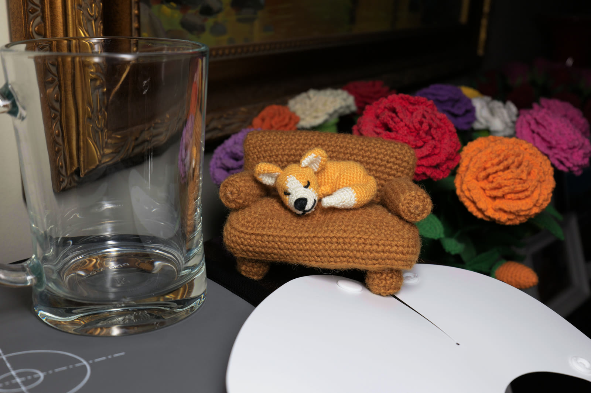
Round 5whites 0.6 ΔE00 from Capture One'sA second photo
One photo can fit a story that isn't true, so we shot another: at base ISO this time, 640, under an LED light with the camera's white balance set to the light's colour temperature. Crocheted flowers brought colours the first photo didn't have. It is the photo in most of this article's pictures.
It confirmed two things and showed a third. The whites fix held on a scene it had never seen: round 5's whites land 0.6 ΔE00 from Capture One's, where round 4's were 1.8. The brightness correction held at base ISO, so the gap it closes wasn't noise from the first photo's ISO 4000. And even with the Kelvin matched, the LUT's greys leaned slightly blue, so that lean was the LUT's own, not the first photo's light. Round 7 takes it out.
Its colours showed something new. Round 5 put the pink-red flowers 8.0 ΔE00 from Capture One and turned them 16° towards red. It pushed oranges towards red too, and left yellows short of Capture One's saturation. The first photo's reds had leaned the same way, by less. The same lean in two scenes under two lights points at the bridge from V-Log: Adobe's sensor matrix only approximates what the camera does when it writes V-Log.
Show the numbers
So we fitted a small correction: a 3 × 3 matrix on the camera values, with each row summing to 1 so greys can't move. That leaves six numbers to fit. At full strength it undid some of the whites fix, taking the second photo's whites from 0.6 to 0.9 ΔE00, because a matrix moves every colour off the grey axis in proportion, faint tints included. So round 6 fades the correction in with saturation: off for whites and greys, fully on for strong colours.
The test that matters is whether it holds on photos it wasn't fitted to. Two daylight photos, below, gave it that test.
Applied through the finished LUT file, round 6 keeps the second photo's whites at 0.7 ΔE00 while its saturated colours fall from 4.5 to 1.6.
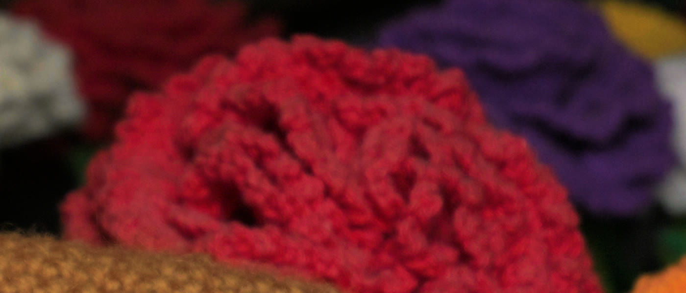
Round 5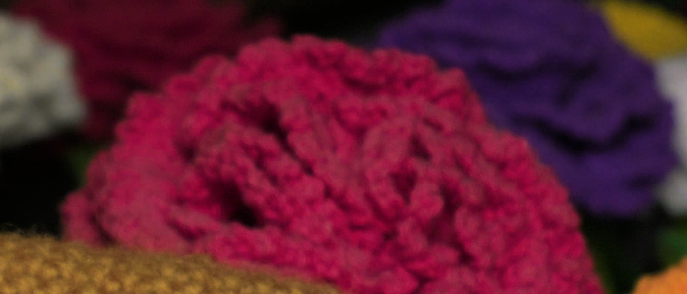
Round 6Two photos in daylight
Every photo so far was taken indoors, so we took two more in daylight, at base ISO with auto white balance: a street under a blue sky, and a flower bed in full sun. They brought what the indoor photos didn't have: sky, foliage and real highlights.
Round 7 on the street photo: 2.1 ΔE00 from Capture One on colours, 1.9 on greys, 1.8 on whites.
Round 6 held up outdoors. Against no correction at all, it more than halved the error on saturated colours in both photos. But it overshot. Fitted indoors, it had never seen a blue sky, and it turned the sky about 6° and made it about a quarter more saturated than Capture One's.
So we refitted the correction on all four photos. The first attempt came out worse on every one of them, which a fit shouldn't do on its own data. It had been minimising plain distance in Lab, which weighs a saturated sky's chroma far more heavily than the eye does. Refitted on ΔE00, the score we judge by, it improved on every photo, and each photo kept its score when the correction was fitted without it.
Show the numbers
Fitted on the daylight photos alone, the correction failed indoors: a street and a flower bed don't hold enough different colours to pin it down. The indoor photos carry the fit. One matrix is still a compromise between the two kinds of light, and the sky stays about a fifth more saturated than Capture One's.
The flower bed held the first real highlights. Its brightest greys reach white in Capture One at around V-Log 0.74, not the 0.72 we had estimated, and Capture One's shoulder is softer than ours was. Our LUT ran up to 0.008 bright near white and clipped about half a stop early. Three passes of measuring the gap and correcting the top of the grey table fixed it, and white now sits about four and a half stops above middle grey.
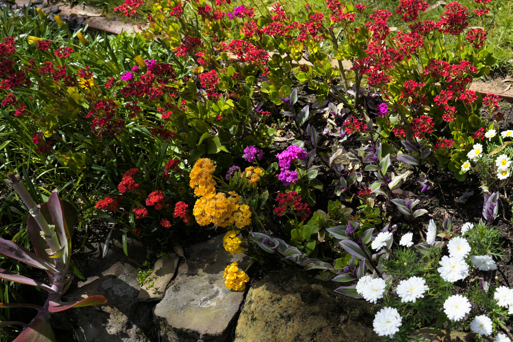
Round 71.7 ΔE00 from Capture OneShow the numbers
The street photo also showed a flaw in how we had been lining the photos up. The camera and Capture One correct the lens slightly differently, not only in scale, and at 18 mm it shows. Allowing for it brought every photo, the indoor ones too, into line to within about three pixels. Every score in this article is measured that way.
Last, the LUT's greys leaned slightly blue on every photo, including the one shot with the Kelvin set, so the lean was ours. Cutting the camera's blue channel by under 1% took most of it out. Photos shot with auto white balance keep a slight magenta lean, which changes from shot to shot, so a fixed LUT can't follow it.
Where it landed
Applied to the camera's own V-Log JPEG, the final LUT lands 1.6 ΔE00 from Capture One across this photo's colours and 1.0 on its greys, and 1.7 and 1.1 on the first photo. The first LUT was 17.1 away. Round 7 barely moves this photo; its gains are in whites and outdoors. Pick any round below and drag across the frame to set it against Capture One's render.
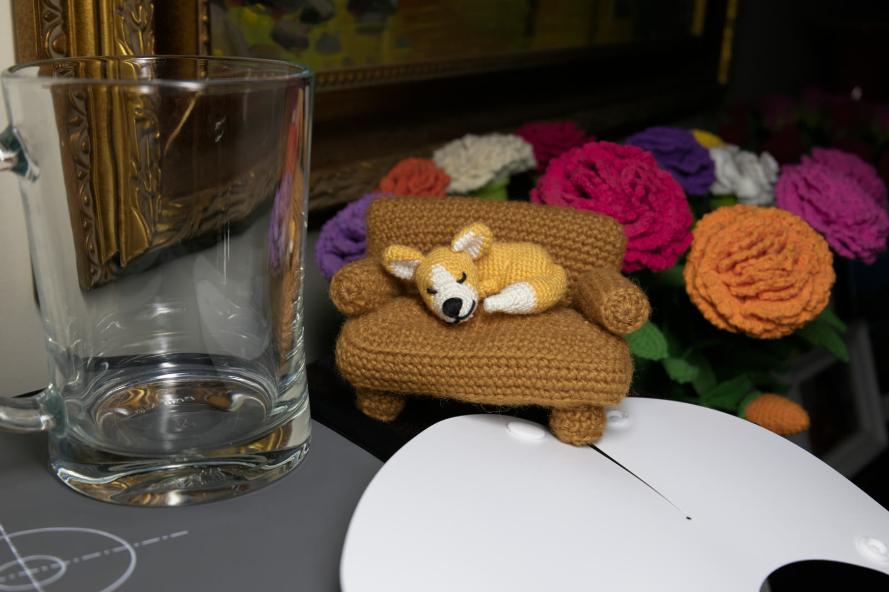
Round 7 Capture OneRound 7: 1.6 ΔE00 from Capture One on colours, 1.0 on greys, 0.7 on whites.
Show the numbers
What's left is small. On the second photo every hue now lands between 1.0 and 1.9 ΔE00 from Capture One, and yellows still sit about a tenth under its saturation. In daylight the sky stays about a fifth more saturated than Capture One's, and warm colours turn up to 8° towards yellow. Photos shot with auto white balance keep a slight magenta lean. And white itself, above the brightest greys we could measure, is extrapolated.
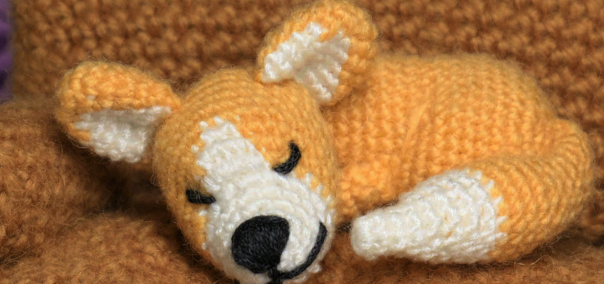
Round 4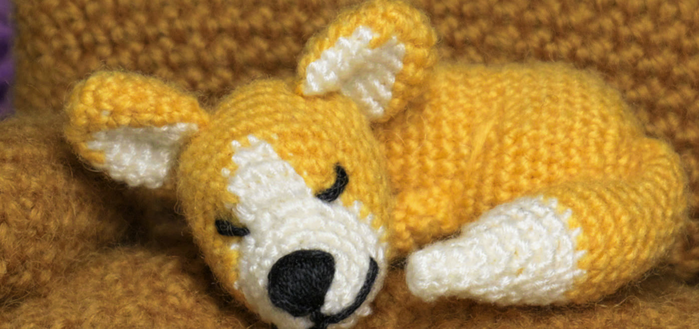
Round 7One detail we nearly missed: Cobalt makes these profiles for the S5II, and we shoot an S9. LibRaw lists slightly different sensor matrices for the two. Capture One applies the S5II profile to S9 files unchanged, so the LUT does too, but the step back from V-Log has to use the S9's own matrix. On the first photo, in round 4, the switch moved the result only from 2.45 to 2.42. Across every colour a V-Log file can hold, the two versions differ by 1.0 ΔE00 on average and by up to 10.5 on saturated colours that scene doesn't contain.
What we'd tell you
A camera profile is not a look
It is a one-way map from raw sensor values. Bake it on its own and the LUT expects numbers no camera sends.
Accurate is not pleasing
Scene-accurate tone looks grey on a screen. The look lives in the curve, and Capture One keeps its curve outside the profile.
Measure the chain, don't decode the parts
One photo rendered twice captured the curve, the exposure offset and the shadow handling at once. A 353-byte file couldn't.
How a curve is applied matters as much as its shape
Per-channel contrast adds saturation in the mid-tones and takes the tint out of whites. Capture One renders as if it uses a little in the mid-tones and all of it near white, and a list of curve points can't show that.
Test the fix on a photo it hasn't seen
A second photo ruled out one theory, explained one colour cast and proved one correction. Fitting on one photo and scoring on the other is what separates a fix from a coincidence.
Fit on the score you judge by
A refit that minimised plain distance in Lab came out worse on every photo, because Lab weighs a saturated sky's chroma far more than the eye does. Fitted on ΔE00, it improved on all of them.